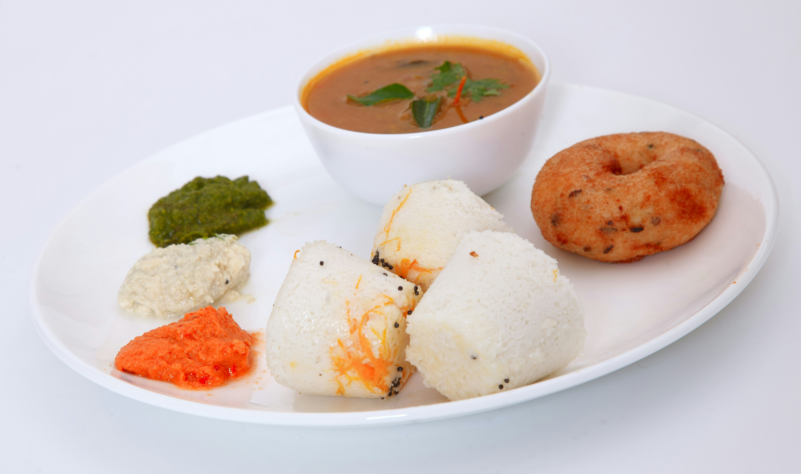

Puttu
HOME

Description
Puttu is a traditional South Indian and Sri Lankan breakfast dish made of steamed cylinders of ground rice and grated coconut. It is loved for its soft, crumbly texture and is usually served with spicy curries or bananas.
Ingredients
- Rice Flour: 2 cups (coarsely ground, roasted puttu podi).
- Grated Coconut: 1 cup (fresh is best).
- Water: Approximately ½ to ¾ cup (lukewarm).
- Salt: ½ teaspoon or to taste.
Steps
- Mix salt into the rice flour and gradually sprinkle water while mixing with your fingertips until the flour is moist enough to hold a shape when pressed but crumbles easily.
- Place a handful of grated coconut at the bottom of a puttu maker (kutti), followed by the moistened rice flour, and top it off with another layer of coconut.
- Place the filled puttu maker over a pressure cooker or steaming pot and steam for about 6–10 minutes until steam escapes steadily from the top holes.
- Carefully push the steamed cylinder out of the mold using a wooden skewer or rod and serve hot.